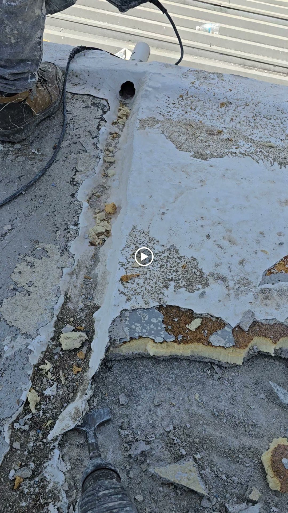
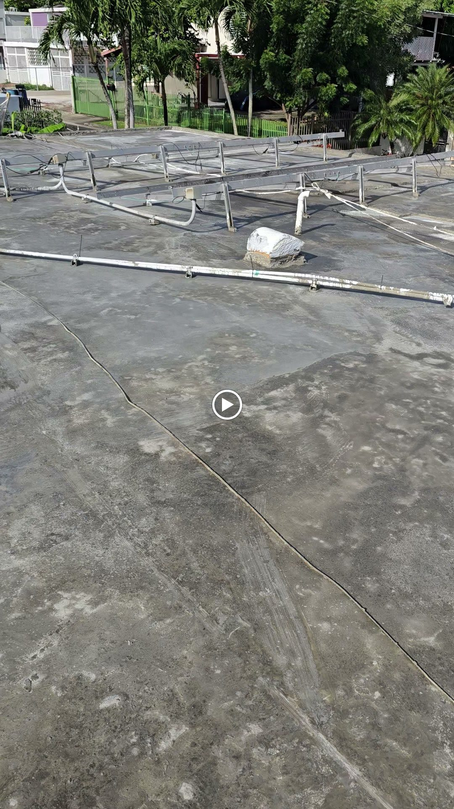

Todo Puerto Rico · Puerto Rico
El techo que no filtra más
Sellado de techos en Puerto Rico con sellador 100% silicona. Remoción de membrana, raspado, corrección de empozamientos y topping. Cotiza por WhatsApp.
Todo Puerto Rico · Puerto Rico
Sellado de techos en Puerto Rico con sellador 100% silicona. Remoción de membrana, raspado, corrección de empozamientos y topping. Cotiza por WhatsApp.
Resultados reales
Cada foto es un trabajo real en techos. Desliza la cinta y toca cualquier foto para verla grande.




← desliza para ver los trabajos →
Lo que hacemos
Del diagnóstico al sellado final: un solo equipo responsable de que tu techo quede seco.
Removemos la membrana vieja y dañada para sellar sobre base sana.
PreparaciónRaspado profundo: quitamos lo suelto y dejamos superficie firme.
PreparaciónCorregimos las áreas donde se empoza el agua.
DrenajeNivelación con topping para un drenaje correcto del techo.
NivelaciónSellador 100% silicona: máxima resistencia al agua estancada y al sol.
SilicónVerificamos el sellado completo contigo antes de entregar.
CalidadAsí de fácil
Mándanos fotos de tu techo por WhatsApp al 787-564-9774.
Revisamos el estado de la membrana y el drenaje.
Remoción, raspado, topping y sellador 100% silicona.
Verificación final contigo. El techo que no filtra más.
100% silicona
Quiénes somos
Pablito Services: sellado de techos en Puerto Rico con proceso completo y sellador 100% silicona. No sellamos encima del problema: removemos, raspamos, nivelamos y sellamos.
El techo que no filtra más. Cotiza por WhatsApp al 787-564-9774.
Preguntas frecuentes
El silicón resiste el agua estancada y los rayos UV mejor que otros selladores: ideal para techos con empozamientos y sol fuerte.
Sí. Si la membrana anterior está dañada, la removemos para sellar sobre una base sana.
Es una capa de nivelación que corrige los desniveles del techo para que el agua drene y no se empoce.
Sí. La corrección de empozamientos es parte del proceso.
Todo Puerto Rico. Escríbenos por WhatsApp y coordinamos.
Por WhatsApp al 787-564-9774 con fotos de tu techo.
Escríbenos por WhatsApp y cotiza el sellado de tu techo hoy mismo.
Cotiza tu sellado
Teléfono / WhatsApp
787-564-9774Área de servicio
Todo Puerto Rico
Sellado de techos
Residencial y comercial
Llena esto y te abrimos WhatsApp con tu mensaje listo.
Cotización sin compromiso: dinos tu pueblo y el estado de tu techo, y te orientamos con el mejor plan.
Esta página la creó ManuPro. Escríbenos hoy mismo y cotiza la website profesional de tu negocio.
Cotizar por WhatsApp